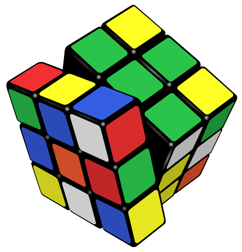

Hasta el siglo XIX se mantuvo el acuerdo respecto al objeto de la matemática; que en términos generales y en palabras de Platón se refería sólo al tratamiento de números, magnitudes y figuras. Platón refiere a la matemática, como una forma de acceso a una «verdad en si», y considera que los objetos acerca de los que versa poseen una existencia propia en el mundo de las ideas. Una existencia que no admite las consideraciones —no formales— producto de la “intuición humana”; más allá de los axiomas que la sustentan. Aristóteles no deja de observar que una definición no implica la existencia de la cosa definida, y que es necesario, o bien un postulado, o bien una demostración. De esa manera, la «verdad matemática» durante más de 2000 años se mantuvo soportada unicamente por la deducciones lógicas referidas sobre números, magnitudes y figuras; a partir de premisas fijadas arbitrariamente por los axiomas.
Esta revolución matemática hace posible el nacimiento de una nueva álgebra, que difiere del álgebra elemental. Un álgebra más general, donde los símbolos y los conceptos que intervienen en sus expresiones, no necesariamente tiene que ser interpretadas como números; pueden también ser interpretadas como otros objetos sometidos a la investigación matemática.
Luego del siglo XIX, se reestructura el objeto y los conceptos básico de las matemáticas. Los matemáticos empiezan a considerar objetos que no poseen ninguna interpretación sensible. Al punto de que Bode se atreve a decir en 1848, que la matemática trata : «acerca de las operaciones consideradas en si mismas, independientemente de los distintos objetos a los que puedan aplicarse»[6].
Figura2.1.Superficie de Boy. Esta superficie, introducida por W. Boy en 1901, es un modelo en nuestro espacio tridimensional de una superficie no orientable cerrada en el plano proyectivo; una inmersión del plano proyectivo real en un espacio tridimensional (Boy la descubrió por encargo de Hilbert para demostrar que el plano proyectivo no podía sumergirse en un espacio tridimensional). [Realizada con: 3d-xplormath.org].
Sage:2.1.1.Parametrización de Kusner-Bryant de la superficie de Boy.
Código SageMath para visualizar la superficie de Boy [Nota A.4.2].
Esta nueva Álgebra Abstracta, continúa utilizando argumentos lógicos; rigurosamente demostrables (como ha sido en la matemática desde la antigüedad). Al estudiar matemáticas abstractas, aún aplicamos un enfoque axiomático; es decir, tomamos una colección de objetos \(\varsigma\) y asumimos algunas reglas sobre su estructura. Estas reglas se llaman axiomas 1 . Usando los axiomas para \(\varsigma\text{,}\) podemos deducir otra información sobre \(\varsigma\) mediante el uso de argumentos lógicos. Es necesario que nuestros axiomas sean consistentes; por lo tanto, no deben contradecirse entre sí. Es conveniente que no haya un exceso de base axiomática. Por el contrario, si es demasiado restrictivo, habrá pocos ejemplos para apoyar la estructura matemática que se pretende.
Siempre que podamos demostrar que una declaración es verdadera, entonces esa declaración será una proposición 2 . Una proposición de gran importancia se llama teorema 3 . En ciertas ocasiones, es conveniente separar la prueba de un teorema o de una proposición en módulos; es decir, probamos varias proposiciones básicas (llamadas lemas), y utilizamos los resultados de estas proposiciones para probar resultados no tan básicos o de orden superior. Si se ha podido probar una proposición o un teorema, es posible derivar otras proposiciones relacionadas llamadas corolarios 4 .
En los dos párrafos anteriores no se ha utilizado la palabra número, sólo se han definido conceptos que bien pudieran aplicarse al álgebra en general: elemental o abstracta; o a las otras tantas álgebras; no euclidianas, etc.
Gracias a la abstracción permitida en la moderna matemática, es posible trabajar algebraicamente con objetos que no son números. En general: El álgebra abstracta analiza operaciones con objetos arbitrarios, para los que se han definido operaciones que satisfacen los principales axiomas algebraicos[1]; la «naturaleza» de los objetos matemáticos es secundaria; y es “poco importante”. La esencia de las matemáticas aparece como el estudio de las relaciones entre objetos que no son específicamente conocidos y descritos mas que por algunas de sus propiedades, precisamente aquellas que se toman como axiomas de partida de su teoría.
El álgebra en general puede tratar con elementos impensables en la antigüedad; elementos de carácter estrictamente numérico o elementos exageradamente abstractos.
Subsección2.1.2Ejemplos de objetos matemáticos
Los Números Naturales.
\(\mathbb{N}\text{:}\) los números enteros positivos; cuando no se incluye el cero, se denota \(\mathbb{N^*}\text{.}\)
Los Números Enteros.
\(\mathbb{Z}\text{:}\) el conjunto de números que incluye a los números naturales, sus opuestos (los negativos) y el cero.
Los Números Racionales.
\(\mathbb{Q}\text{:}\) todos aquellos números que pueden representarse como el cociente de dos números enteros; es decir, una fracción \(a/b\text{;}\) con numerador entero \(a\) y denominador entero \(b\) distinto de cero.
Los Números Irracionales.
Son los números que no puede expresarse exactamente como una fracción de dos enteros; su expansión decimal es infinita y no periódica. No hay una notación única y estandarizada para el conjunto de los irracionales; pero algunos de sus elementos tienen nombres específicos: \(\pi, \sqrt{2}, e\text{,}\)…, etc. Las razones para la carencia de una notación general, son relativas a que el conjunto de los números irracionales no constituye alguna estructura algebraica.
Los Números Reales.
\(\mathbb{R}\text{:}\) El conjunto de los números reales agrupa a los conjuntos de números: racionales e irracionales.
Figura2.2.A pesar de la dificultad de realizar un inventario práctico de la diversidad numérica que han construidos los matemáticos. Los Números Reales (\(\mathbb{R}\)) agrupan una parte importante de ellos.
Nota2.1.2.La Recta Real.
Entre las muchas abstracciones matemáticas estrictamente numéricas, se encuentra la llamada Recta Real: Una abstracción que ubica cualquier número sobre una recta que se extiende desde los números más negativos (supuestos a la izquierda) hasta los números más positivos (supuestos a la derecha): una línea donde se presumen coexisten en buen orden y equidistante todos los números llamados reales (\(\mathbb{R}\)); entre dos entidades inalcanzables conocidas como menos infinitos (\(-\infty\)) y más infinito (\(+\infty\)). Estos números reales (y la recta con que se representan) incluyen a la gran mayoría de números conocidos (pero no a todos), entre ellos, los llamados: naturales (\(\mathbb{N}\)), enteros (\(\mathbb{Z}\)), racionales (\(\mathbb{Q}\)); un cuerpo de esa naturaleza por definición posee incontables («infinitos») elementos de carácter numérico.
\(\;\)
Figura2.3.La Recta Real
Los símbolos con que se denotan los conjuntos (o subconjuntos; \(\subseteq\)) numéricos pertenecientes a la recta real, están ligados a un largo proceso histórico de propuesta de “nuevos números” que fueron “apareciendo” como resultado de operaciones matemáticas, con una resistencia reflexiva de la comunidad de matemática; aunque su novedad no estaba en disputa; sólo que no eran números, por lo tanto, no existían.
Con el conjunto de números componentes de la recta real, podría pensarse en una plenitud que satisface la continuidad numérica de la recta real, pero dicho estado completivo, aún no considera especímenes extraños como \(\sqrt{2}\) o \(\pi\text{.}\) El cuerpo racional \(\mathbb{Q}\) es “incompleto” respecto a la recta real, no hay suficientes números racionales para representar todos los puntos de la recta real. Fue necesario expandir el universo racional \(\mathbb{Q}\) mediante la añadidura de los números irracionales: aquellos cuya expresión decimal es aperiódica e infinita; y no pueden ser expresados como una fracción; ejemplos de ellos son: \(\sqrt{7}, \sqrt{2}\text{,}\) la base de los logaritmos neperianos \(e\text{,}\)\(\pi\) e infinitos más … El cuerpo de los números reales, en relación con la recta real, de esta manera queda definido completo. La plenitud para la recta real, es la que permite considerar objetos bidimensionales: como el plano real \(R
\times R\) o \(R^2\) [Ejemplo 2.2.2] —es acertado el entendimiento de que el «plano real» implica un conjunto infinito de pares ordenados—.
Nota2.1.3.El cubo de Rubik.
Un objeto matemático que no tiene carácter numérico; pero contiene un conjunto de estados susceptible de ser enumerados y estudiado por el álgebra abstracta, es el Cubo de Rubik. Cada elemento del conjunto de estados, está definido por cada permutación posible de las teselas que componen las caras de cubo; y todas ellas definen el conjunto de estados posibles. La cardinalización de sus estados, sólo es útil para diferenciar los estados y contarlos; pero no forma parte ni se requiere para estudiar las propiedades matemáticas estructurales del cubo de Rubik.

El Cubo de Rubik es un rompecabezas mecánico tridimensional 5 . Posee seis caras de colores uniformes (tradicionalmente blanco, rojo, azul, naranja, verde y amarillo); segmentadas en nueve teselas. Un mecanismo permite girar independientemente cada cara externa o nivel intermedio del cubo; mezclando así las diversas teselas de colores en las caras externas del cubo.
El número de permutaciones posibles en el cubo de Rubik de \(3 \times 3\) tesela por caras, es de: Cuarenta y tres trillones doscientos cincuenta y dos mil tres billones doscientos setenta y cuatro mil cuatrocientos ochenta y nueve millones ochocientos cincuenta y seis mil permutaciones (\(43.252.003.274.489.856.000\text{;}\) aproximadamente \(4.3 \times 10^{19}\) permutaciones); cada permutación corresponde a un estado posible del cubo.
Sage:2.1.4.Funciones del grupo del cubo de Rubik.
SageMath [Apéndice A] posee una clase (Python) para ayudar a calcular las acciones del grupo de cubo de Rubik; usando la notación “Singmaster”.